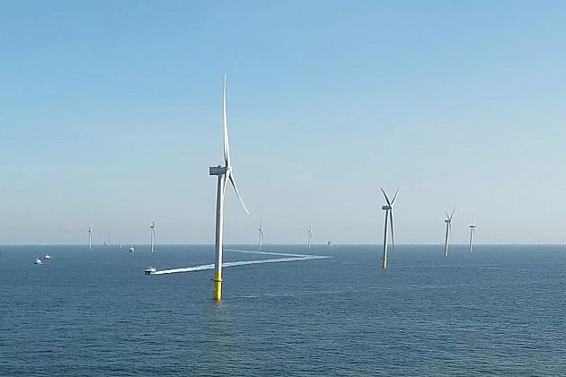
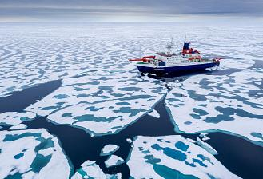

WHAT'S NEW ?
Aker Solutions awarded new Johan Sverdrup contract
Equinor and its Johan Sverdrup licence partners have awarded Aker Solutions the contract for hook-up of the fifth platform on the Johan Sverdrup field. At peak the contract will provide jobs for around 1,300 people and have a value of up to NOK 500 million.More ...

What will the future of energy in Europe look like ?
Offshore wind power is fast replacing fossil fuels as a source of clean and increasingly affordable electricity. In this episode of Ocean, Euronews meets those working at some of the major new industrial sites to find out more. Ørsted's "Borssele 1 & 2" wind farm is one of them, based in the North Sea, 22 kilometres off the Dutch coast. It is home to ninety-four wind turbines, which are being attached to the seabed at depths ranging from 14 to 40 meters. When it is complete, it will be the largest offshore wind farm in the Netherlands. More ...

WORLD’S BIGGEST ARCTIC EXPEDITION BRINGS BACK 1000 ICE SAMPLES TO PREDICT CLIMATE CHANGE
The world’s largest ever polar expedition will return to the German port of Bremerhaven on Monday with rafts of essential data about climate change. After being stranded in the Arctic earlier this year due to COVID-19, the Polarstern is heading home for the first time in 389 days. More ...